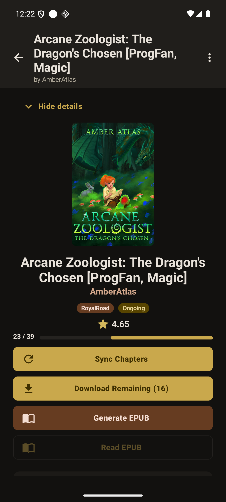
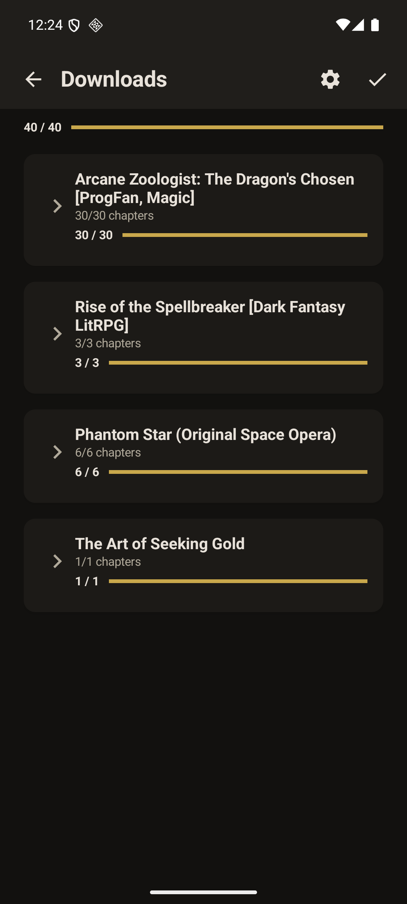

P2-01 — “Download Remaining (16)” enqueued 30 queue items
Repro: Opened Arcane Zoologist: The Dragon’s Chosen at 9/25, tapped Sync Chapters, and waited for the details screen to settle at 23/39 with Download Remaining (16). Tapping that action eventually produced a correct 39/39 story, but Downloads showed Arcane Zoologist … 30/30 chapters and the persisted queue contained 30 completed rows (chapter indices 25–38 and 0–15).
Impact: The user-facing remaining count and the actual queue plan disagree. The final story is complete, but the app performs unnecessary/duplicate queue work and makes download progress/accounting difficult to trust after sync.


Suggested investigation: compare the chapter set used to render downloadedChapters/Download Remaining with the chapter set passed to the queue planner after a sync refresh. The persisted queue evidence is stronger than the visual count alone.